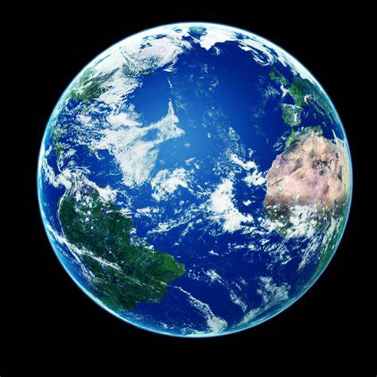

| 1. |
 |
The Earth formed about 4.6 billion years ago. It is one of four rocky planets on the inner side of the Solar System. The other three are Mercury, Venus, and Mars. The large mass of the Sun keeps the Earth in orbit through the force of gravity. Earth also turns around in space, so that different parts face the Sun at different times. Earth goes around the Sun once (one year) for every 3651⁄4 times it turns around (one day). Earth is the only planet in the Solar System that has a large amount of liquid water on its surface. About 71% of the surface of Earth is covered by liquid or frozen water. Because of this, people sometimes call it the blue planet. Because of its water, Earth is home to millions of species of plants and animals which need water to survive. The living part of Earth's surface is called the "biosphere".
|
| 2. |
 |
Saturn is the sixth planet from the Sun and the second largest in the Solar System, after Jupiter. It is a gas giant, with an average radius of about nine times that of Earth. It has an eighth the average density of Earth, but is over 95 times more massive. Even though Saturn is almost as big as Jupiter, Saturn has less than a third its mass. Saturn orbits the Sun at a distance of 9.59 AU (1,434 million km), with an orbital period of 29.45 years. Saturn's interior is thought to be composed of a rocky core, surrounded by a deep layer of metallic hydrogen, an intermediate layer of liquid hydrogen and liquid helium, and an outer layer of gas. Saturn has a pale yellow hue, due to ammonia crystals in its upper atmosphere. Its magnetic field is weaker than Earth's, but has a magnetic moment 580 times that of Earth due to its size. The outer atmosphere is generally bland and lacking in contrast, although long-lived features can appear.
|